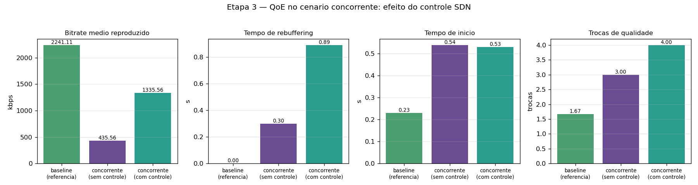
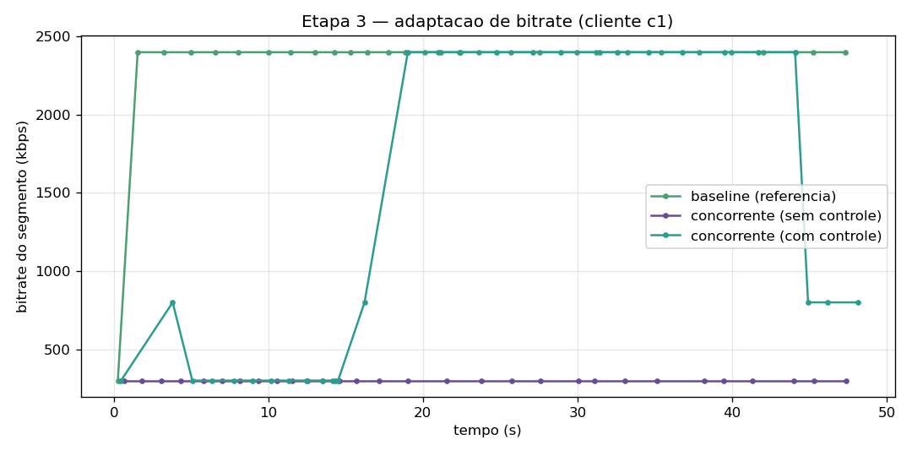

Projeto Final de Programabilidade de Redes — Etapa 3: Controle via SDN
Repositório com código e instruções de reprodução:
https://github.com/Lleooli/qoe-streaming-sdn
A Etapa 3 implementa o mecanismo de rede programável previsto no projeto: detectar a degradação de QoE em tempo de execução no controlador SDN e mitigá-la programando regras OpenFlow dinamicamente. O alvo é o cenário concorrente da Etapa 2 — o de pior QoE: um fluxo UDP de 8 Mbps (txg→rxg), sem controle de congestionamento, ocupa o gargalo de 10 Mbps e derruba o bitrate médio do vídeo de 2241 kbps (baseline) para 436 kbps (−81%), além de provocar rebuffering. A solução parte da telemetria de portas que o controlador já coletava nas etapas anteriores.
O controlador (controller/qoe_controller.py, os-ken /
OpenFlow 1.3) passa a operar com um pipeline de duas tabelas, mantendo
intacto o comportamento de learning switch das Etapas 1–2:
| Tabela | Função | Regras |
|---|---|---|
| 0 | classificação / policiamento | padrão: GotoTable(1); a mitigação instala aqui regras de alta prioridade |
| 1 | encaminhamento (learning switch L2) | regras reativas por (in_port, eth_dst); table-miss → controlador |
A separação em duas tabelas permite policiar fluxos na tabela 0 sem reescrever a lógica de encaminhamento: após o policiamento, o pacote segue para a tabela 1, que decide a porta de saída normalmente.
A cada janela de 5 s, o controlador calcula a vazão de cada porta a partir
do incremento de tx_bytes entre coletas. O gargalo é considerado
saturado quando a porta de maior vazão de s1 ultrapassa
85% da capacidade (8,5 Mbps de 10 Mbps). Para não disparar por rajada
momentânea, exige-se a condição sustentada por 2 janelas consecutivas
(~10 s). Confirmada a saturação, a mitigação é acionada; quando a utilização
volta a ficar baixa por 2 janelas, a restrição é removida (controle reversível).
A lógica de detecção/mitigação fica condicionada à variável de ambiente
QOE_MITIGATION=on, ativada apenas no cenário com controle. Assim,
os resultados das Etapas 1–2 permanecem reproduzíveis sem alteração.
Classificação dos fluxos: no cenário, o vídeo trafega sobre TCP (porta 8080 do servidor) e o tráfego concorrente sobre UDP (iperf3). Essa assinatura permite tratar o agressor sem afetar o vídeo. Ao detectar saturação, o controlador executa:
1. cria um meter de rate-limit OFPMeterMod(ADD, meter_id=1,
flags=KBPS, band=DROP@2000kbps)
2. instala na tabela 0 (prioridade 100) match(eth_type=IPv4, ip_proto=UDP)
-> Meter(1), GotoTable(1)
O fluxo UDP fica limitado a 2 Mbps no gargalo; os ~8 Mbps restantes ficam
disponíveis para o vídeo TCP, que volta a escalar de qualidade. Um modo
alternativo de descarte (QOE_MODE=drop) derruba o fluxo
concorrente por completo; o padrão adotado é o rate-limit, menos agressivo e
mais realista como política de priorização.
Cada decisão é registrada no controller.log (prefixo
DECISION) e em results/concorrente_controle/decisions.log,
atendendo ao requisito de "logs demonstrando decisões em tempo de execução":
22:16:03 degradacao detectada em dpid=1 porta=3: utilizacao 100% do gargalo
(9.96 Mbps) por 2 janelas
22:16:03 mitigacao: rate-limit do trafego UDP concorrente a 2000 kbps
(meter 1, tabela 0) em dpid=1 — prioriza o video TCP no gargalo
A detecção aponta a porta 3 de s1 (uplink s1→s2), que é
exatamente o enlace gargalo: 100% de utilização sustentada confirma a
degradação antes de qualquer ação.
Média dos três clientes, comparando a referência sem disputa, o cenário degradado e o mesmo cenário com o controle SDN ativo:
| condição | bitrate (kbps) | startup (s) | t. parado (s) | trocas | RTT durante (ms) |
|---|---|---|---|---|---|
| baseline (referência) | 2241 | 0,23 | 0,00 | 1,7 | 21,5 |
| concorrente (sem controle) | 436 | 0,54 | 0,30 | 3,0 | 57,1 |
| concorrente (com controle) | 1336 | 0,53 | 0,89 | 4,0 | 44,1 |


O controle triplica o bitrate médio reproduzido (436 → 1336 kbps, +206%), recuperando cerca de 60% do baseline, e reduz o RTT durante o streaming (57 → 44 ms) por aliviar a fila do gargalo. A linha do tempo (Figura 2) evidencia o mecanismo em ação: o cliente fica preso na qualidade mínima enquanto o UDP domina o enlace e sobe para a qualidade máxima poucos segundos após a regra de rate-limit ser programada — a relação causa-efeito entre a decisão do controlador e a melhora da QoE fica explícita.
Trade-off. O tempo total de rebuffering sobe ligeiramente (0,30 → 0,89 s) e há uma troca de qualidade a mais. O salto abrupto de banda disponível, quando a restrição entra em vigor, provoca um breve reajuste do buffer em 2 dos 3 clientes. É um efeito transitório, restrito ao instante da intervenção, amplamente compensado pela melhora expressiva e sustentada da qualidade visual pelo restante da sessão.
# dentro do WSL, como root, na raiz do projeto sudo make controle # cenário concorrente_controle + figuras da Etapa 3
Equivale a executar scripts/run_experiment.py --scenario
concorrente_controle seguido de plot_results.py e
plot_control.py. Ambiente testado: Ubuntu 24.04 (WSL2),
Python 3.12, Mininet 2.3, Open vSwitch 3.3, os-ken 2.8.1.
Durante o desenvolvimento desta etapa foram utilizadas ferramentas de inteligência artificial generativa como apoio na estruturação do código do controlador (organização do pipeline de tabelas e dos scripts de automação) e na análise dos resultados. A definição da lógica de detecção e de mitigação, a escolha dos parâmetros, a execução dos experimentos, a validação dos resultados e as conclusões são de responsabilidade do autor, que revisou todo o conteúdo gerado com auxílio dessas ferramentas.